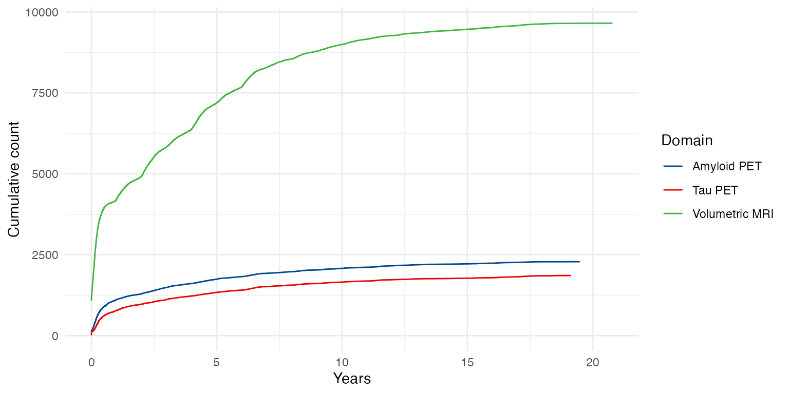

NACCADRC Basic Summaries
Last Updated: February 06, 2026
Source:vignettes/NACCADRC-basic-summaries.Rmd
NACCADRC-basic-summaries.RmdMerge key imaging and PHC cognitive data
## Combine hippocampal volume from SCAN and Mixed Protocol (UDS) ----
mri_hipp <- scan_mrisbm %>% # SCAN volumes
select(NACCID, DATE = SCANDT, HIPPOCAMPUS, ICV = CEREBRUMTCV) %>%
mutate(Source = 'SCAN') %>%
bind_rows(
uds_mri %>% # Mixed Protocol (UDS) volumes
select(NACCID, MRIYR, MRIMO, MRIDY, HIPPOCAMPUS = HIPPOVOL, ICV = NACCICV) %>%
filter(HIPPOCAMPUS != 88.8888, ICV != 9999.999, !is.na(HIPPOCAMPUS)) %>%
mutate(
DATE = as.IDate(paste(MRIYR, MRIMO, MRIDY, sep='-')),
Source = 'Mixed protocol'))
NACCETPR_levels <- names(rev(sort(table(uds_ftldlbd$NACCETPR))))
## Combine hippocampal volume, tau PET, amyloid PET, cognition, and demographics ----
dd <- mri_hipp %>% # Hippocampal volumes
select(NACCID, Source, DATE, HIPPOCAMPUS, ICV) %>%
full_join(scan_taupetnpdka %>%
select(NACCID, DATE = SCANDATE, Tau_PET = META_TEMPORAL_SUVR, TRACER) %>%
rename(Tau_TRACER = TRACER),
by = c('NACCID', 'DATE')) %>%
full_join(scan_amyloidpetgaain %>% # Amyloid PET
select(NACCID, DATE = SCANDATE, AMYLOID_STATUS, CENTILOIDS, TRACER) %>%
rename(Amyloid_TRACER = TRACER),
by = c('NACCID', 'DATE')) %>%
full_join(phc_cognition %>% # Harmonized cognition
select(NACCID, NACCVNUM, PHC_MEM, PHC_EXF, PHC_LAN) %>%
left_join(uds_ftldlbd %>% # UDS visit dates
mutate(DATE = as.IDate(paste(VISITYR, VISITMO, VISITDAY, sep='-'))) %>%
select(NACCID, NACCVNUM, DATE),
by = c('NACCID', 'NACCVNUM')),
by = c('NACCID', 'DATE')) %>%
full_join(uds_ftldlbd %>% # UDS diagnosis, etiology over time
mutate(
DATE = as.IDate(paste(VISITYR, VISITMO, VISITDAY, sep='-')),
NACCETPR = factor(NACCETPR, levels = NACCETPR_levels)) %>%
select(NACCID, DATE, NACCUDSD, NACCETPR),
by = c('NACCID', 'DATE')) %>%
left_join(uds_ftldlbd %>% # UDS demographics
mutate(BIRTHDATE = as.IDate(paste(BIRTHYR, BIRTHMO, 15, sep = '-'))) %>%
filter(!is.na(BIRTHDATE)) %>%
arrange(NACCID, NACCVNUM) %>%
select(NACCID, BIRTHDATE, RACE, SEX, EDUC, HISPANIC) %>%
group_by(NACCID) %>% # Carry information back/forward
tidyr::fill(.direction = "updown") %>% # to impute missing data
ungroup() %>%
filter(!duplicated(NACCID)), # One row of demographics per NACCID
by = 'NACCID') %>%
arrange(NACCID, DATE) %>%
group_by(NACCID) %>% # Carry Dx information forward/back
tidyr::fill(all_of(c("NACCUDSD", "NACCETPR")), .direction = "downup") %>%
mutate(ICV = mean(ICV, na.rm = TRUE)) %>% # Average ICV over visits
ungroup() %>%
mutate(
Age = as.numeric(DATE - BIRTHDATE)/365.25,
Source = case_when( # If not otherwise specified, data collected
!is.na(Source) ~ Source, # before 2021-01-01 is assumed to be
DATE < "2021-01-01" ~ 'Mixed protocol', # mixed protocol vs SCAN
TRUE ~ 'SCAN'),
Etiology = case_when( # Simplified/collapse diagnosis
NACCETPR == 'Not applicable, not cognitively impaired' ~ 'Not impaired',
NACCETPR == "Alzheimer's disease (AD)" ~ 'AD',
NACCETPR == 'Lewy body disease (LBD)' ~ 'LBD',
NACCETPR %in% c("FTLD, other", "FTLD with motor neuron disease (e.g., ALS)") ~
"FTLD (any)",
NACCETPR == "Vascular brain injury or vascular dementia including stroke" ~ "Vascular",
TRUE ~ 'Other') %>%
factor(levels = c('Not impaired', 'LBD', "FTLD (any)", 'AD', "Vascular", 'Other')),
# add labels for tables
PHC_MEM = structure(PHC_MEM, label = 'Harmonized Memory'),
PHC_MEM = structure(PHC_MEM, label = 'Harmonized Memory'),
PHC_EXF = structure(PHC_EXF, label = 'Harmonized Exec Function'),
PHC_LAN = structure(PHC_LAN, label = 'Harmonized Language'),
EDUC = structure(EDUC, label = 'Education (yrs)'),
Age = structure(Age, label = 'Age (yrs)'),
NACCETPR = structure(NACCETPR, label = 'Primary etiologic diagnosis'),
NACCUDSD = structure(NACCUDSD, label = 'Cognitive status at UDS visit'))
dd_cross <- dd %>%
group_by(NACCID) %>%
fill(everything(), .direction = "updown") %>%
filter(!duplicated(NACCID)) %>%
ungroup() %>%
mutate( # add labels for tables
PHC_MEM = structure(PHC_MEM, label = 'Harmonized Memory'),
PHC_MEM = structure(PHC_MEM, label = 'Harmonized Memory'),
PHC_EXF = structure(PHC_EXF, label = 'Harmonized Exec Function'),
PHC_LAN = structure(PHC_LAN, label = 'Harmonized Language'),
EDUC = structure(EDUC, label = 'Education (yrs)'),
Age = structure(Age, label = 'Age (yrs)'),
NACCETPR = structure(NACCETPR, label = 'Primary etiologic diagnosis'),
NACCUDSD = structure(NACCUDSD, label = 'Cognitive status at UDS visit'))
# harmonize tau PET data ----
tmp <- dd %>% filter(!is.na(Tau_PET) & !is.na(Age))
tau_PET_fit <- lme(Tau_PET ~ Tau_TRACER + SEX + Age, data = tmp,
random = ~ 1 | NACCID,
weights = varIdent(form = ~ 1 | Tau_TRACER))
tmp$Tau_PET_ComBat <- ComBat(Tau_PET ~ Tau_TRACER + SEX + Age, data = tmp,
random1 = ~ 1 | NACCID, random2 = NULL,
weights = varIdent(form = ~ 1 | Tau_TRACER))
dd <- dd %>%
left_join(tmp %>% select(NACCID, DATE, Tau_PET_ComBat),
by = c('NACCID', 'DATE'))Summarize data collection
tmp <- dd %>%
select(NACCID, CENTILOIDS, HIPPOCAMPUS, Tau_PET_ComBat) %>%
rename(
`Amyloid PET` = CENTILOIDS, `Volumetric MRI` = HIPPOCAMPUS,
`Tau PET` = Tau_PET_ComBat) %>%
group_by(NACCID) %>%
pivot_longer(`Amyloid PET`:`Tau PET`) %>%
filter(!is.na(value)) %>%
mutate(Domain = factor(name, levels = c(
"Amyloid PET", "Tau PET", "Volumetric MRI"))) %>%
group_by(Domain, NACCID) %>%
summarise(`Serial scans` = n())
with(tmp, table(Domain, `Serial scans`)) %>%
knitr::kable(caption = 'Table 1. Number of individuals who have received the given number serial scans for each scan type.')| 1 | 2 | 3 | 4 | 5 | 6 | 7 | 8 | |
|---|---|---|---|---|---|---|---|---|
| Amyloid PET | 2092 | 158 | 0 | 0 | 0 | 0 | 0 | 0 |
| Tau PET | 1570 | 127 | 11 | 0 | 0 | 0 | 0 | 0 |
| Volumetric MRI | 5160 | 1284 | 465 | 120 | 28 | 15 | 3 | 1 |
dd %>%
select(NACCID, Age, Etiology, NACCUDSD, NACCETPR,
CENTILOIDS, HIPPOCAMPUS, Tau_PET_ComBat) %>%
rename(
`Amyloid PET` = CENTILOIDS, `Volumetric MRI` = HIPPOCAMPUS,
`Tau PET` = Tau_PET_ComBat) %>%
group_by(NACCID) %>%
mutate(
Age0 = min(Age, na.rm = TRUE),
`Initial Dx` = case_when(
Age == Age0 ~ NACCUDSD,
TRUE ~ NA),
Years = Age - Age0) %>%
arrange(NACCID, Years) %>%
tidyr::fill(all_of("Initial Dx"), .direction = "down") %>%
pivot_longer(`Amyloid PET`:`Tau PET`) %>%
filter(!is.na(value), !is.na(Years), !is.na(NACCUDSD)) %>%
mutate(Domain = factor(name, levels = c(
"Amyloid PET", "Tau PET", "Volumetric MRI"))) %>%
group_by(Domain, Years) %>%
summarise(count = n()) %>%
mutate(`Cumulative count` = cumsum(count)) %>%
ggplot(aes(x=Years, y=`Cumulative count`, color = Domain)) +
geom_line()
Cumulative imaging data.
Baseline characteristics
All participants
tbl_summary(
data = dd_cross,
by = NACCUDSD,
include = c("Etiology", "SEX", "Age", "RACE", "HISPANIC", "AMYLOID_STATUS", "CENTILOIDS", "HIPPOCAMPUS", "Tau_PET", "Tau_TRACER", "PHC_MEM", "PHC_EXF", "PHC_LAN", "EDUC"),
type = all_continuous() ~ "continuous2",
statistic = list(
all_continuous() ~ c(
"{mean} ({sd})",
"{median} ({p25}, {p75})",
"{min}, {max}"
),
all_categorical() ~ "{n} ({p}%)"
),
digits = all_continuous() ~ 1,
percent = "row",
missing_text = "(Missing)"
) %>%
add_stat_label(label = all_continuous2() ~ c("Mean (SD)", "Median (Q1, Q3)", "Range")) %>%
modify_caption(caption = "Table 2. Characteristics of all availabel NACC ADRC participants by baseline diagnosis.") %>%
modify_footnote_header(
footnote = "Row-wise percentage; n (%)",
columns = all_stat_cols(),
replace = TRUE
) %>%
# modify_abbreviation(abbreviation = abbrev_list) %>%
bold_labels()| Characteristic |
Normal cognition N = 22,8631 |
Impaired-not-MCI N = 2,4961 |
MCI N = 12,4661 |
Dementia N = 17,4431 |
|---|---|---|---|---|
| Etiology, n (%) | ||||
| Not impaired | 22,863 (100%) | 0 (0%) | 0 (0%) | 0 (0%) |
| LBD | 0 (0%) | 54 (3.0%) | 647 (36%) | 1,096 (61%) |
| FTLD (any) | 0 (0%) | 44 (1.7%) | 364 (14%) | 2,185 (84%) |
| AD | 0 (0%) | 404 (2.2%) | 5,552 (30%) | 12,643 (68%) |
| Vascular | 0 (0%) | 146 (12%) | 695 (59%) | 334 (28%) |
| Other | 0 (0%) | 1,848 (22%) | 5,208 (63%) | 1,185 (14%) |
| SEX, n (%) | ||||
| Male | 7,904 (34%) | 1,035 (4.4%) | 6,155 (26%) | 8,408 (36%) |
| Female | 14,959 (47%) | 1,461 (4.6%) | 6,311 (20%) | 9,035 (28%) |
| Age (yrs) | ||||
| Mean (SD) | 69.9 (10.7) | 69.9 (10.1) | 72.8 (9.2) | 72.8 (10.4) |
| Median (Q1, Q3) | 70.4 (64.5, 76.7) | 70.2 (64.0, 76.6) | 73.2 (67.1, 79.0) | 73.9 (65.5, 80.5) |
| Range | 18.0, 104.1 | 20.2, 102.9 | 18.5, 109.9 | 21.9, 110.7 |
| RACE, n (%) | ||||
| White | 17,428 (40%) | 1,652 (3.8%) | 9,531 (22%) | 14,569 (34%) |
| Black or African American | 4,017 (47%) | 622 (7.3%) | 2,129 (25%) | 1,809 (21%) |
| American Indian or Alaska Native | 247 (46%) | 37 (6.9%) | 103 (19%) | 149 (28%) |
| Native Hawaiian or Other Pacific Islander | 21 (33%) | 3 (4.8%) | 8 (13%) | 31 (49%) |
| Asian | 724 (47%) | 64 (4.1%) | 398 (26%) | 366 (24%) |
| Other (specify) | 282 (29%) | 98 (10%) | 206 (21%) | 379 (39%) |
| Unknown | 144 (36%) | 20 (5.1%) | 91 (23%) | 140 (35%) |
| HISPANIC, n (%) | ||||
| No | 20,711 (42%) | 2,143 (4.3%) | 11,110 (22%) | 15,812 (32%) |
| Yes | 2,047 (39%) | 344 (6.6%) | 1,303 (25%) | 1,553 (30%) |
| Unknown | 105 (43%) | 9 (3.7%) | 53 (22%) | 78 (32%) |
| AMYLOID_STATUS, n (%) | 419 (46%) | 13 (1.4%) | 289 (31%) | 198 (22%) |
| (Missing) | 21,526 | 2,449 | 11,977 | 17,188 |
| CENTILOIDS | ||||
| Mean (SD) | 13.1 (30.6) | 10.3 (23.8) | 40.6 (47.5) | 63.0 (50.3) |
| Median (Q1, Q3) | 3.0 (-4.0, 19.0) | 1.0 (-4.0, 21.0) | 25.0 (0.0, 76.0) | 68.0 (16.0, 101.0) |
| Range | -47.0, 201.0 | -33.0, 74.0 | -56.0, 175.0 | -38.0, 219.0 |
| (Missing) | 21,526 | 2,449 | 11,977 | 17,188 |
| HIPPOCAMPUS | ||||
| Mean (SD) | 6.3 (0.8) | 6.2 (0.8) | 6.0 (0.9) | 5.6 (1.0) |
| Median (Q1, Q3) | 6.3 (5.8, 6.9) | 6.2 (5.6, 6.7) | 5.9 (5.3, 6.6) | 5.5 (4.9, 6.2) |
| Range | 0.0, 9.7 | 4.4, 8.7 | 2.5, 9.1 | 2.3, 9.0 |
| (Missing) | 18,733 | 2,202 | 10,857 | 16,583 |
| Tau_PET | ||||
| Mean (SD) | 1.2 (0.2) | 1.2 (0.2) | 1.4 (0.4) | 1.7 (0.6) |
| Median (Q1, Q3) | 1.2 (1.1, 1.3) | 1.2 (1.1, 1.3) | 1.3 (1.2, 1.5) | 1.6 (1.3, 2.1) |
| Range | 0.9, 3.4 | 0.8, 1.9 | 0.9, 3.3 | 1.0, 4.4 |
| (Missing) | 21,794 | 2,448 | 12,096 | 17,222 |
| Tau_TRACER, n (%) | ||||
| Flortaucipir | 674 (56%) | 34 (2.8%) | 292 (24%) | 211 (17%) |
| MK6240 | 396 (80%) | 14 (2.8%) | 78 (16%) | 10 (2.0%) |
| (Missing) | 21,793 | 2,448 | 12,096 | 17,222 |
| Harmonized Memory | ||||
| Mean (SD) | 0.8 (0.5) | 0.4 (0.5) | 0.1 (0.6) | -0.9 (0.8) |
| Median (Q1, Q3) | 0.7 (0.5, 1.1) | 0.4 (0.1, 0.7) | 0.1 (-0.3, 0.5) | -0.9 (-1.3, -0.4) |
| Range | -2.4, 2.7 | -2.6, 2.4 | -2.3, 2.2 | -2.7, 2.0 |
| (Missing) | 2,840 | 266 | 1,317 | 1,638 |
| Harmonized Exec Function | ||||
| Mean (SD) | 0.7 (0.7) | 0.2 (0.7) | 0.1 (0.7) | -0.7 (0.8) |
| Median (Q1, Q3) | 0.7 (0.2, 1.1) | 0.3 (-0.2, 0.7) | 0.1 (-0.4, 0.5) | -0.7 (-1.2, -0.2) |
| Range | -2.7, 3.2 | -2.7, 2.7 | -3.2, 2.7 | -3.3, 2.2 |
| (Missing) | 2,817 | 276 | 1,337 | 2,616 |
| Harmonized Language | ||||
| Mean (SD) | 0.8 (0.6) | 0.4 (0.6) | 0.2 (0.6) | -0.6 (0.8) |
| Median (Q1, Q3) | 0.8 (0.4, 1.2) | 0.4 (0.0, 0.8) | 0.2 (-0.2, 0.5) | -0.6 (-1.1, -0.1) |
| Range | -1.9, 3.3 | -2.9, 2.9 | -2.9, 2.9 | -3.3, 2.9 |
| (Missing) | 2,817 | 275 | 1,344 | 2,583 |
| Education (yrs) | ||||
| Mean (SD) | 15.9 (2.9) | 14.8 (3.7) | 15.3 (3.4) | 14.5 (3.7) |
| Median (Q1, Q3) | 16.0 (14.0, 18.0) | 16.0 (12.0, 18.0) | 16.0 (13.0, 18.0) | 15.0 (12.0, 18.0) |
| Range | 0.0, 30.0 | 0.0, 24.0 | 0.0, 31.0 | 0.0, 30.0 |
| (Missing) | 113 | 13 | 71 | 204 |
| 1 Row-wise percentage; n (%) | ||||
Participants with hippocampal volumes
tbl_summary(
data = dd_cross %>% filter(!is.na(HIPPOCAMPUS)),
by = NACCUDSD,
include = c("Etiology", "SEX", "Age", "RACE", "HISPANIC", "AMYLOID_STATUS", "CENTILOIDS", "HIPPOCAMPUS", "Tau_PET", "Tau_TRACER", "PHC_MEM", "PHC_EXF", "PHC_LAN", "EDUC"),
type = all_continuous() ~ "continuous2",
statistic = list(
all_continuous() ~ c(
"{mean} ({sd})",
"{median} ({p25}, {p75})",
"{min}, {max}"
),
all_categorical() ~ "{n} ({p}%)"
),
digits = all_continuous() ~ 1,
percent = "row",
missing_text = "(Missing)"
) %>%
add_stat_label(label = all_continuous2() ~ c("Mean (SD)", "Median (Q1, Q3)", "Range")) %>%
modify_caption(caption = "Table 3. Characteristics of NACC ADRC participants with MRI data by baseline diagnosis.") %>%
modify_footnote_header(
footnote = "Row-wise percentage; n (%)",
columns = all_stat_cols(),
replace = TRUE
) %>%
# modify_abbreviation(abbreviation = abbrev_list) %>%
bold_labels()| Characteristic |
Normal cognition N = 4,1301 |
Impaired-not-MCI N = 2941 |
MCI N = 1,6091 |
Dementia N = 8601 |
|---|---|---|---|---|
| Etiology, n (%) | ||||
| Not impaired | 4,130 (100%) | 0 (0%) | 0 (0%) | 0 (0%) |
| LBD | 0 (0%) | 6 (5.2%) | 73 (63%) | 36 (31%) |
| FTLD (any) | 0 (0%) | 5 (5.6%) | 29 (32%) | 56 (62%) |
| AD | 0 (0%) | 35 (2.2%) | 889 (55%) | 701 (43%) |
| Vascular | 0 (0%) | 32 (17%) | 128 (70%) | 23 (13%) |
| Other | 0 (0%) | 216 (29%) | 490 (65%) | 44 (5.9%) |
| SEX, n (%) | ||||
| Male | 1,410 (50%) | 124 (4.4%) | 836 (30%) | 431 (15%) |
| Female | 2,720 (66%) | 170 (4.2%) | 773 (19%) | 429 (10%) |
| Age (yrs) | ||||
| Mean (SD) | 68.6 (9.0) | 69.1 (8.5) | 72.2 (8.2) | 72.1 (9.4) |
| Median (Q1, Q3) | 69.0 (63.5, 74.4) | 68.7 (63.9, 75.4) | 72.4 (66.6, 77.8) | 73.2 (66.0, 79.0) |
| Range | 21.3, 100.1 | 36.4, 92.0 | 27.7, 98.7 | 30.2, 94.2 |
| RACE, n (%) | ||||
| White | 3,146 (59%) | 189 (3.6%) | 1,215 (23%) | 761 (14%) |
| Black or African American | 756 (62%) | 84 (6.8%) | 312 (25%) | 75 (6.1%) |
| American Indian or Alaska Native | 64 (77%) | 4 (4.8%) | 15 (18%) | 0 (0%) |
| Native Hawaiian or Other Pacific Islander | 3 (100%) | 0 (0%) | 0 (0%) | 0 (0%) |
| Asian | 91 (59%) | 8 (5.2%) | 43 (28%) | 13 (8.4%) |
| Other (specify) | 44 (60%) | 5 (6.8%) | 16 (22%) | 8 (11%) |
| Unknown | 26 (63%) | 4 (9.8%) | 8 (20%) | 3 (7.3%) |
| HISPANIC, n (%) | ||||
| No | 3,708 (60%) | 251 (4.1%) | 1,459 (24%) | 779 (13%) |
| Yes | 404 (61%) | 43 (6.5%) | 141 (21%) | 78 (12%) |
| Unknown | 18 (60%) | 0 (0%) | 9 (30%) | 3 (10%) |
| AMYLOID_STATUS, n (%) | 299 (53%) | 6 (1.1%) | 181 (32%) | 77 (14%) |
| (Missing) | 3,177 | 267 | 1,300 | 762 |
| CENTILOIDS | ||||
| Mean (SD) | 12.8 (30.3) | 6.7 (22.2) | 39.5 (46.9) | 60.9 (49.2) |
| Median (Q1, Q3) | 3.0 (-4.0, 18.0) | 2.0 (-4.0, 12.0) | 24.0 (-1.0, 73.0) | 62.0 (19.0, 98.0) |
| Range | -38.0, 201.0 | -33.0, 74.0 | -40.0, 175.0 | -22.0, 219.0 |
| (Missing) | 3,177 | 267 | 1,300 | 762 |
| HIPPOCAMPUS | ||||
| Mean (SD) | 6.3 (0.8) | 6.2 (0.8) | 6.0 (0.9) | 5.6 (1.0) |
| Median (Q1, Q3) | 6.3 (5.8, 6.9) | 6.2 (5.6, 6.7) | 5.9 (5.3, 6.6) | 5.5 (4.9, 6.2) |
| Range | 0.0, 9.7 | 4.4, 8.7 | 2.5, 9.1 | 2.3, 9.0 |
| Tau_PET | ||||
| Mean (SD) | 1.2 (0.2) | 1.2 (0.2) | 1.5 (0.4) | 1.9 (0.6) |
| Median (Q1, Q3) | 1.2 (1.1, 1.3) | 1.2 (1.1, 1.3) | 1.3 (1.2, 1.6) | 1.8 (1.3, 2.2) |
| Range | 0.9, 3.4 | 0.8, 1.9 | 0.9, 3.3 | 1.1, 4.4 |
| (Missing) | 3,390 | 266 | 1,350 | 761 |
| Tau_TRACER, n (%) | ||||
| Flortaucipir | 413 (58%) | 18 (2.5%) | 194 (27%) | 92 (13%) |
| MK6240 | 328 (80%) | 10 (2.4%) | 65 (16%) | 7 (1.7%) |
| (Missing) | 3,389 | 266 | 1,350 | 761 |
| Harmonized Memory | ||||
| Mean (SD) | 0.9 (0.5) | 0.5 (0.6) | 0.1 (0.6) | -0.8 (0.7) |
| Median (Q1, Q3) | 0.8 (0.5, 1.2) | 0.5 (0.1, 0.9) | 0.1 (-0.3, 0.5) | -0.8 (-1.2, -0.4) |
| Range | -0.9, 2.6 | -0.8, 2.2 | -1.8, 2.0 | -2.7, 1.5 |
| (Missing) | 460 | 29 | 172 | 70 |
| Harmonized Exec Function | ||||
| Mean (SD) | 0.7 (0.7) | 0.2 (0.8) | 0.1 (0.6) | -0.7 (0.8) |
| Median (Q1, Q3) | 0.7 (0.3, 1.2) | 0.3 (-0.3, 0.8) | 0.1 (-0.3, 0.5) | -0.6 (-1.2, -0.1) |
| Range | -1.8, 3.2 | -2.2, 2.2 | -2.3, 2.7 | -3.3, 1.9 |
| (Missing) | 460 | 30 | 175 | 82 |
| Harmonized Language | ||||
| Mean (SD) | 0.9 (0.6) | 0.5 (0.6) | 0.2 (0.6) | -0.5 (0.7) |
| Median (Q1, Q3) | 0.8 (0.5, 1.3) | 0.4 (0.1, 0.8) | 0.2 (-0.1, 0.6) | -0.4 (-0.9, 0.0) |
| Range | -1.2, 3.3 | -1.2, 2.3 | -1.9, 2.6 | -2.9, 1.5 |
| (Missing) | 460 | 30 | 174 | 80 |
| Education (yrs) | ||||
| Mean (SD) | 16.1 (2.8) | 14.8 (3.9) | 15.5 (3.3) | 15.2 (3.5) |
| Median (Q1, Q3) | 16.0 (14.0, 18.0) | 16.0 (12.0, 18.0) | 16.0 (13.0, 18.0) | 16.0 (12.0, 18.0) |
| Range | 0.0, 25.0 | 0.0, 24.0 | 0.0, 31.0 | 0.0, 25.0 |
| (Missing) | 11 | 1 | 5 | 2 |
| 1 Row-wise percentage; n (%) | ||||
Participants with tau PET
tbl_summary(
data = dd_cross %>% filter(!is.na(Tau_PET)),
by = NACCUDSD,
include = c("Etiology", "SEX", "Age", "RACE", "HISPANIC", "AMYLOID_STATUS", "CENTILOIDS", "HIPPOCAMPUS", "Tau_PET", "Tau_TRACER", "PHC_MEM", "PHC_EXF", "PHC_LAN", "EDUC"),
type = all_continuous() ~ "continuous2",
statistic = list(
all_continuous() ~ c(
"{mean} ({sd})",
"{median} ({p25}, {p75})",
"{min}, {max}"
),
all_categorical() ~ "{n} ({p}%)"
),
digits = all_continuous() ~ 1,
percent = "row",
missing_text = "(Missing)"
) %>%
add_stat_label(label = all_continuous2() ~ c("Mean (SD)", "Median (Q1, Q3)", "Range")) %>%
modify_caption(caption = "Table 4. Characteristics of NACC ADRC participants with tau PET data by baseline diagnosis.") %>%
modify_footnote_header(
footnote = "Row-wise percentage; n (%)",
columns = all_stat_cols(),
replace = TRUE
) %>%
# modify_abbreviation(abbreviation = abbrev_list) %>%
bold_labels()| Characteristic |
Normal cognition N = 1,0691 |
Impaired-not-MCI N = 481 |
MCI N = 3701 |
Dementia N = 2211 |
|---|---|---|---|---|
| Etiology, n (%) | ||||
| Not impaired | 1,069 (100%) | 0 (0%) | 0 (0%) | 0 (0%) |
| LBD | 0 (0%) | 1 (5.6%) | 11 (61%) | 6 (33%) |
| FTLD (any) | 0 (0%) | 2 (3.8%) | 13 (25%) | 37 (71%) |
| AD | 0 (0%) | 9 (2.3%) | 224 (58%) | 151 (39%) |
| Vascular | 0 (0%) | 3 (9.1%) | 30 (91%) | 0 (0%) |
| Other | 0 (0%) | 33 (22%) | 92 (61%) | 27 (18%) |
| SEX, n (%) | ||||
| Male | 374 (54%) | 25 (3.6%) | 182 (26%) | 106 (15%) |
| Female | 695 (68%) | 23 (2.3%) | 188 (18%) | 115 (11%) |
| Age (yrs) | ||||
| Mean (SD) | 67.5 (8.2) | 67.2 (8.9) | 70.3 (6.9) | 70.1 (9.3) |
| Median (Q1, Q3) | 68.0 (62.7, 72.9) | 66.9 (63.0, 73.5) | 70.4 (65.8, 75.4) | 71.5 (63.3, 76.6) |
| Range | 32.5, 92.2 | 36.4, 80.9 | 51.7, 88.4 | 41.5, 87.6 |
| RACE, n (%) | ||||
| White | 783 (59%) | 34 (2.6%) | 302 (23%) | 199 (15%) |
| Black or African American | 234 (75%) | 9 (2.9%) | 57 (18%) | 14 (4.5%) |
| American Indian or Alaska Native | 32 (84%) | 3 (7.9%) | 3 (7.9%) | 0 (0%) |
| Native Hawaiian or Other Pacific Islander | 2 (50%) | 0 (0%) | 2 (50%) | 0 (0%) |
| Asian | 12 (67%) | 1 (5.6%) | 5 (28%) | 0 (0%) |
| Other (specify) | 4 (40%) | 1 (10%) | 1 (10%) | 4 (40%) |
| Unknown | 2 (33%) | 0 (0%) | 0 (0%) | 4 (67%) |
| HISPANIC, n (%) | ||||
| No | 982 (62%) | 44 (2.8%) | 348 (22%) | 211 (13%) |
| Yes | 81 (69%) | 4 (3.4%) | 22 (19%) | 10 (8.5%) |
| Unknown | 6 (100%) | 0 (0%) | 0 (0%) | 0 (0%) |
| AMYLOID_STATUS, n (%) | 219 (50%) | 6 (1.4%) | 138 (32%) | 73 (17%) |
| (Missing) | 394 | 18 | 121 | 119 |
| CENTILOIDS | ||||
| Mean (SD) | 13.9 (28.6) | 6.2 (24.4) | 36.3 (45.6) | 59.2 (51.2) |
| Median (Q1, Q3) | 3.0 (-2.0, 19.0) | -1.0 (-4.0, 8.0) | 18.0 (-2.0, 73.0) | 64.5 (4.0, 104.0) |
| Range | -30.0, 131.0 | -33.0, 74.0 | -56.0, 171.0 | -21.0, 191.0 |
| (Missing) | 394 | 18 | 121 | 119 |
| HIPPOCAMPUS | ||||
| Mean (SD) | 6.4 (0.8) | 6.2 (0.8) | 6.1 (0.9) | 5.5 (1.0) |
| Median (Q1, Q3) | 6.4 (5.8, 6.9) | 6.0 (5.6, 6.8) | 6.0 (5.4, 6.7) | 5.5 (5.0, 6.2) |
| Range | 3.4, 8.7 | 4.9, 7.6 | 3.0, 8.5 | 2.3, 7.6 |
| (Missing) | 329 | 20 | 111 | 122 |
| Tau_PET | ||||
| Mean (SD) | 1.2 (0.2) | 1.2 (0.2) | 1.4 (0.4) | 1.7 (0.6) |
| Median (Q1, Q3) | 1.2 (1.1, 1.3) | 1.2 (1.1, 1.3) | 1.3 (1.2, 1.5) | 1.6 (1.3, 2.1) |
| Range | 0.9, 3.4 | 0.8, 1.9 | 0.9, 3.3 | 1.0, 4.4 |
| Tau_TRACER, n (%) | ||||
| Flortaucipir | 674 (56%) | 34 (2.8%) | 292 (24%) | 211 (17%) |
| MK6240 | 395 (79%) | 14 (2.8%) | 78 (16%) | 10 (2.0%) |
| Harmonized Memory | ||||
| Mean (SD) | 0.9 (0.5) | 0.6 (0.5) | 0.2 (0.5) | -0.5 (0.7) |
| Median (Q1, Q3) | 0.8 (0.6, 1.3) | 0.5 (0.2, 0.8) | 0.2 (-0.1, 0.6) | -0.5 (-1.0, -0.1) |
| Range | -0.3, 2.6 | -0.1, 1.6 | -1.1, 2.0 | -2.6, 1.3 |
| (Missing) | 237 | 13 | 71 | 67 |
| Harmonized Exec Function | ||||
| Mean (SD) | 0.8 (0.6) | 0.5 (0.5) | 0.3 (0.6) | -0.5 (0.9) |
| Median (Q1, Q3) | 0.8 (0.3, 1.2) | 0.5 (0.1, 0.9) | 0.2 (-0.2, 0.6) | -0.5 (-1.1, 0.1) |
| Range | -1.0, 2.9 | -1.1, 1.2 | -1.6, 2.0 | -3.2, 1.4 |
| (Missing) | 235 | 13 | 71 | 67 |
| Harmonized Language | ||||
| Mean (SD) | 0.9 (0.6) | 0.6 (0.5) | 0.4 (0.5) | -0.3 (0.7) |
| Median (Q1, Q3) | 0.9 (0.5, 1.3) | 0.7 (0.3, 1.0) | 0.4 (0.1, 0.7) | -0.3 (-0.6, 0.2) |
| Range | -0.9, 2.9 | -0.6, 1.3 | -1.3, 2.2 | -2.3, 1.3 |
| (Missing) | 235 | 13 | 71 | 67 |
| Education (yrs) | ||||
| Mean (SD) | 16.4 (2.4) | 15.8 (2.5) | 16.1 (2.8) | 16.0 (3.0) |
| Median (Q1, Q3) | 16.0 (15.0, 18.0) | 16.0 (13.5, 18.0) | 16.0 (14.0, 18.0) | 16.0 (14.0, 18.0) |
| Range | 8.0, 23.0 | 11.0, 20.0 | 8.0, 22.0 | 3.0, 25.0 |
| (Missing) | 1 | 0 | 0 | 0 |
| 1 Row-wise percentage; n (%) | ||||
Participants with amyloid PET
tbl_summary(
data = dd_cross %>% filter(!is.na(CENTILOIDS)),
by = NACCUDSD,
include = c("Etiology", "SEX", "Age", "RACE", "HISPANIC", "AMYLOID_STATUS", "CENTILOIDS", "HIPPOCAMPUS", "Tau_PET", "Tau_TRACER", "PHC_MEM", "PHC_EXF", "PHC_LAN", "EDUC"),
type = all_continuous() ~ "continuous2",
statistic = list(
all_continuous() ~ c(
"{mean} ({sd})",
"{median} ({p25}, {p75})",
"{min}, {max}"
),
all_categorical() ~ "{n} ({p}%)"
),
digits = all_continuous() ~ 1,
percent = "row",
missing_text = "(Missing)"
) %>%
add_stat_label(label = all_continuous2() ~ c("Mean (SD)", "Median (Q1, Q3)", "Range")) %>%
modify_caption(caption = "Table 5. Characteristics of NACC ADRC participants with amyloid PET data by baseline diagnosis.") %>%
modify_footnote_header(
footnote = "Row-wise percentage; n (%)",
columns = all_stat_cols(),
replace = TRUE
) %>%
# modify_abbreviation(abbreviation = abbrev_list) %>%
bold_labels()| Characteristic |
Normal cognition N = 1,3371 |
Impaired-not-MCI N = 471 |
MCI N = 4891 |
Dementia N = 2551 |
|---|---|---|---|---|
| Etiology, n (%) | ||||
| Not impaired | 1,337 (100%) | 0 (0%) | 0 (0%) | 0 (0%) |
| LBD | 0 (0%) | 1 (1.9%) | 33 (61%) | 20 (37%) |
| FTLD (any) | 0 (0%) | 3 (8.1%) | 9 (24%) | 25 (68%) |
| AD | 0 (0%) | 9 (1.8%) | 297 (61%) | 182 (37%) |
| Vascular | 0 (0%) | 3 (7.1%) | 36 (86%) | 3 (7.1%) |
| Other | 0 (0%) | 31 (18%) | 114 (67%) | 25 (15%) |
| SEX, n (%) | ||||
| Male | 435 (52%) | 19 (2.3%) | 244 (29%) | 141 (17%) |
| Female | 902 (70%) | 28 (2.2%) | 245 (19%) | 114 (8.8%) |
| Age (yrs) | ||||
| Mean (SD) | 67.8 (8.3) | 66.3 (9.4) | 71.3 (7.2) | 70.2 (9.3) |
| Median (Q1, Q3) | 68.4 (63.1, 73.0) | 66.3 (61.0, 73.1) | 71.5 (66.6, 76.6) | 70.6 (63.4, 76.7) |
| Range | 21.3, 93.4 | 36.9, 83.2 | 50.8, 93.0 | 41.5, 90.8 |
| RACE, n (%) | ||||
| White | 901 (59%) | 31 (2.0%) | 382 (25%) | 215 (14%) |
| Black or African American | 352 (74%) | 11 (2.3%) | 88 (18%) | 25 (5.3%) |
| American Indian or Alaska Native | 35 (85%) | 3 (7.3%) | 3 (7.3%) | 0 (0%) |
| Native Hawaiian or Other Pacific Islander | 1 (50%) | 0 (0%) | 1 (50%) | 0 (0%) |
| Asian | 35 (63%) | 1 (1.8%) | 12 (21%) | 8 (14%) |
| Other (specify) | 9 (56%) | 1 (6.3%) | 3 (19%) | 3 (19%) |
| Unknown | 4 (50%) | 0 (0%) | 0 (0%) | 4 (50%) |
| HISPANIC, n (%) | ||||
| No | 1,216 (62%) | 43 (2.2%) | 457 (23%) | 242 (12%) |
| Yes | 114 (71%) | 4 (2.5%) | 29 (18%) | 13 (8.1%) |
| Unknown | 7 (70%) | 0 (0%) | 3 (30%) | 0 (0%) |
| AMYLOID_STATUS, n (%) | 419 (46%) | 13 (1.4%) | 289 (31%) | 198 (22%) |
| CENTILOIDS | ||||
| Mean (SD) | 13.1 (30.6) | 10.3 (23.8) | 40.6 (47.5) | 63.0 (50.3) |
| Median (Q1, Q3) | 3.0 (-4.0, 19.0) | 1.0 (-4.0, 21.0) | 25.0 (0.0, 76.0) | 68.0 (16.0, 101.0) |
| Range | -47.0, 201.0 | -33.0, 74.0 | -56.0, 175.0 | -38.0, 219.0 |
| HIPPOCAMPUS | ||||
| Mean (SD) | 6.3 (0.8) | 6.1 (0.7) | 6.0 (1.0) | 5.5 (1.0) |
| Median (Q1, Q3) | 6.3 (5.8, 6.8) | 6.0 (5.6, 6.6) | 5.9 (5.4, 6.7) | 5.5 (5.0, 6.4) |
| Range | 3.1, 8.5 | 4.9, 7.6 | 2.5, 8.5 | 2.3, 7.4 |
| (Missing) | 384 | 20 | 180 | 157 |
| Tau_PET | ||||
| Mean (SD) | 1.2 (0.2) | 1.2 (0.2) | 1.4 (0.4) | 1.7 (0.6) |
| Median (Q1, Q3) | 1.2 (1.1, 1.3) | 1.2 (1.1, 1.3) | 1.3 (1.1, 1.5) | 1.4 (1.2, 2.1) |
| Range | 0.9, 3.4 | 0.8, 1.9 | 0.9, 3.3 | 1.0, 4.1 |
| (Missing) | 662 | 17 | 240 | 153 |
| Tau_TRACER, n (%) | ||||
| Flortaucipir | 323 (53%) | 19 (3.1%) | 178 (29%) | 93 (15%) |
| MK6240 | 352 (79%) | 11 (2.5%) | 71 (16%) | 9 (2.0%) |
| (Missing) | 662 | 17 | 240 | 153 |
| Harmonized Memory | ||||
| Mean (SD) | 0.9 (0.5) | 0.6 (0.5) | 0.2 (0.5) | -0.6 (0.7) |
| Median (Q1, Q3) | 0.9 (0.6, 1.3) | 0.5 (0.3, 0.8) | 0.3 (-0.2, 0.6) | -0.6 (-1.1, -0.2) |
| Range | -0.3, 2.6 | -0.1, 1.6 | -1.2, 2.0 | -2.6, 1.6 |
| (Missing) | 232 | 9 | 98 | 63 |
| Harmonized Exec Function | ||||
| Mean (SD) | 0.8 (0.6) | 0.5 (0.6) | 0.2 (0.6) | -0.6 (0.9) |
| Median (Q1, Q3) | 0.7 (0.3, 1.2) | 0.5 (0.0, 1.0) | 0.2 (-0.2, 0.6) | -0.7 (-1.2, -0.1) |
| Range | -1.1, 2.9 | -1.3, 1.6 | -1.6, 2.0 | -3.2, 1.4 |
| (Missing) | 230 | 9 | 98 | 62 |
| Harmonized Language | ||||
| Mean (SD) | 0.9 (0.6) | 0.6 (0.5) | 0.3 (0.5) | -0.4 (0.7) |
| Median (Q1, Q3) | 0.9 (0.5, 1.3) | 0.6 (0.2, 0.8) | 0.3 (0.0, 0.7) | -0.3 (-0.8, 0.1) |
| Range | -0.9, 3.1 | -0.6, 1.9 | -1.3, 2.0 | -2.4, 1.2 |
| (Missing) | 230 | 9 | 98 | 62 |
| Education (yrs) | ||||
| Mean (SD) | 16.5 (2.4) | 15.6 (2.6) | 16.0 (2.7) | 15.8 (2.9) |
| Median (Q1, Q3) | 16.0 (15.0, 18.0) | 16.0 (14.0, 18.0) | 16.0 (14.0, 18.0) | 16.0 (14.0, 18.0) |
| Range | 7.0, 23.0 | 9.0, 20.0 | 4.0, 22.0 | 3.0, 24.0 |
| (Missing) | 2 | 0 | 1 | 0 |
| 1 Row-wise percentage; n (%) | ||||
Summary plots
Spaghetti plots
dd %>%
select(NACCID, Source, Etiology, Age, NACCUDSD, NACCETPR, CENTILOIDS) %>%
filter(!is.na(CENTILOIDS), !is.na(Age)) %>%
group_by(NACCID) %>%
mutate(
Age0 = min(Age),
`Initial Dx` = case_when(
Age == Age0 ~ NACCUDSD,
TRUE ~ NA),
Years = Age - Age0) %>%
arrange(NACCID, Years) %>%
tidyr::fill(all_of("Initial Dx"), .direction = "down") %>%
ggplot(aes(x=Years, y=CENTILOIDS)) +
geom_point(aes(color=Source, shape = Etiology), alpha=1) +
geom_line(aes(group = NACCID), alpha=0.1) +
facet_grid(. ~ `Initial Dx`) +
guides(colour = guide_legend(override.aes = list(alpha=1))) +
ylab('Amyloid PET (CL)')
Spaghetti plot of amyloid PET.
dd %>%
select(NACCID, Source, Etiology, Age, NACCUDSD, NACCETPR, Tau_PET_ComBat) %>%
filter(!is.na(Tau_PET_ComBat), !is.na(Age)) %>%
group_by(NACCID) %>%
mutate(
Age0 = min(Age),
`Initial Dx` = case_when(
Age == Age0 ~ NACCUDSD,
TRUE ~ NA),
Years = Age - Age0) %>%
arrange(NACCID, Years) %>%
tidyr::fill(all_of("Initial Dx"), .direction = "down") %>%
ggplot(aes(x=Years, y=Tau_PET_ComBat)) +
geom_point(aes(color=Source, shape = Etiology), alpha=1) +
geom_line(aes(group = NACCID), alpha=0.1) +
facet_grid(. ~ `Initial Dx`) +
guides(colour = guide_legend(override.aes = list(alpha=1))) +
ylab('Tau PET (MTL SUVR)')
Spaghetti plot of tau PET.
dd %>%
select(NACCID, Source, Etiology, Age, NACCUDSD, NACCETPR, HIPPOCAMPUS) %>%
filter(!is.na(HIPPOCAMPUS), !is.na(Age)) %>%
group_by(NACCID) %>%
mutate(
Age0 = min(Age),
`Initial Dx` = case_when(
Age == Age0 ~ NACCUDSD,
TRUE ~ NA),
Years = Age - Age0) %>%
arrange(NACCID, Years) %>%
tidyr::fill(all_of("Initial Dx"), .direction = "down") %>%
ggplot(aes(x=Years, y=HIPPOCAMPUS)) +
geom_point(aes(color=Source, shape = Etiology), alpha=1) +
geom_line(aes(group = NACCID), alpha=0.1) +
facet_grid(. ~ `Initial Dx`) +
guides(colour = guide_legend(override.aes = list(alpha=1))) +
ylab('Hippocampal volume')
Spaghetti plot of hippocampal volumes.
dd %>%
select(NACCID, Age, Etiology, NACCUDSD, NACCETPR,
PHC_MEM, PHC_EXF, PHC_LAN) %>%
rename(Memory = PHC_MEM, `Exec. Function` = PHC_EXF, Language = PHC_LAN) %>%
group_by(NACCID) %>%
mutate(
Age0 = min(Age),
`Initial Dx` = case_when(
Age == Age0 ~ NACCUDSD,
TRUE ~ NA),
Years = Age - Age0) %>%
arrange(NACCID, Years) %>%
tidyr::fill(all_of("Initial Dx"), .direction = "down") %>%
pivot_longer(Memory:Language) %>%
filter(!is.na(value), !is.na(Years), !is.na(NACCUDSD)) %>%
ggplot(aes(x=Years, y=value)) +
geom_point(aes(color = Etiology), alpha=0.1) +
facet_grid(name ~ `Initial Dx`, scales = 'free_y') +
guides(colour = guide_legend(override.aes = list(alpha=1))) +
ylab('')
Spaghetti plot of harmonized cognitive scores.
LOESS Trends
dd %>%
select(NACCID, Age, Etiology, NACCUDSD, NACCETPR,
CENTILOIDS, HIPPOCAMPUS, Tau_PET_ComBat, PHC_MEM, PHC_EXF, PHC_LAN) %>%
rename(
`Amyloid PET (CL)` = CENTILOIDS, `Hipp. volume` = HIPPOCAMPUS,
`Tau PET (MTL SUVR)` = Tau_PET_ComBat,
Memory = PHC_MEM, `Exec. Function` = PHC_EXF, Language = PHC_LAN) %>%
group_by(NACCID) %>%
mutate(
Age0 = min(Age),
`Initial Dx` = case_when(
Age == Age0 ~ NACCUDSD,
TRUE ~ NA),
Years = Age - Age0) %>%
arrange(NACCID, Years) %>%
tidyr::fill(all_of("Initial Dx"), .direction = "down") %>%
pivot_longer(`Amyloid PET (CL)`:Language) %>%
filter(!is.na(value), !is.na(Years), !is.na(NACCUDSD)) %>%
mutate(name = factor(name, levels = c(
"Amyloid PET (CL)", "Tau PET (MTL SUVR)", "Hipp. volume",
"Memory", "Exec. Function", "Language"))) %>%
ggplot(aes(x=Age, y=value, color = `Initial Dx`)) +
facet_wrap(vars(name), scales = 'free_y', ncol = 2) +
geom_smooth(method = 'gam', formula = y ~ s(x, bs = "cs", fx = TRUE, k = 1)) +
ylab('Amyloid PET (CL)')
LOESS plots.
ComBat Harmonization of tau PET (tracers)
summary(tau_PET_fit)
#> Linear mixed-effects model fit by REML
#> Data: tmp
#> AIC BIC logLik
#> 1173 1211 -579
#>
#> Random effects:
#> Formula: ~1 | NACCID
#> (Intercept) Residual
#> StdDev: 0.33 0.23
#>
#> Variance function:
#> Structure: Different standard deviations per stratum
#> Formula: ~1 | Tau_TRACER
#> Parameter estimates:
#> MK6240 Flortaucipir
#> 1.0 0.3
#> Fixed effects: Tau_PET ~ Tau_TRACER + SEX + Age
#> Value Std.Error DF t-value p-value
#> (Intercept) 1.34 0.075 1706 17.9 0.00
#> Tau_TRACERMK6240 -0.14 0.020 147 -7.0 0.00
#> SEXFemale 0.00 0.017 1706 -0.3 0.78
#> Age 0.00 0.001 147 0.6 0.58
#> Correlation:
#> (Intr) T_TRAC SEXFml
#> Tau_TRACERMK6240 -0.196
#> SEXFemale -0.177 -0.054
#> Age -0.983 0.146 0.045
#>
#> Standardized Within-Group Residuals:
#> Min Q1 Med Q3 Max
#> -2.524 -0.140 -0.078 0.024 4.668
#>
#> Number of Observations: 1857
#> Number of Groups: 1708
ggplot(dd %>% filter(!is.na(Tau_PET_ComBat)),
aes(x = Tau_PET, y = Tau_PET_ComBat, color = Tau_TRACER)) +
geom_point() +
geom_abline(intercept = 0, slope = 1, linetype = 'dashed')
Publishing with NACC Data
Authors must comply with the NACC data use
agreement. See the author
checklist for more information. If you use the NACCADRC
R data package, please also cite (Donohue et al.
2026).
Funding
Work on this R package was funded by CLARiTI (NIH U01
AG082350). The NACC database is funded by NIA/NIH Grant U24 AG072122.
SCAN was funded by NIA/NIH U24 AG067418. For funding of clinical sites,
see NACC data use
agreement, also copied here.
References
Donohue, Michael C, Kedir Hussen, Oliver Langford, et al. 2026.
“Alzheimer’s Clinical Research Data via r Packages: The
Alzverse.” Alzheimer’s & Dementia 22 (2): e71152. https://doi.org/10.1002/alz.71152.